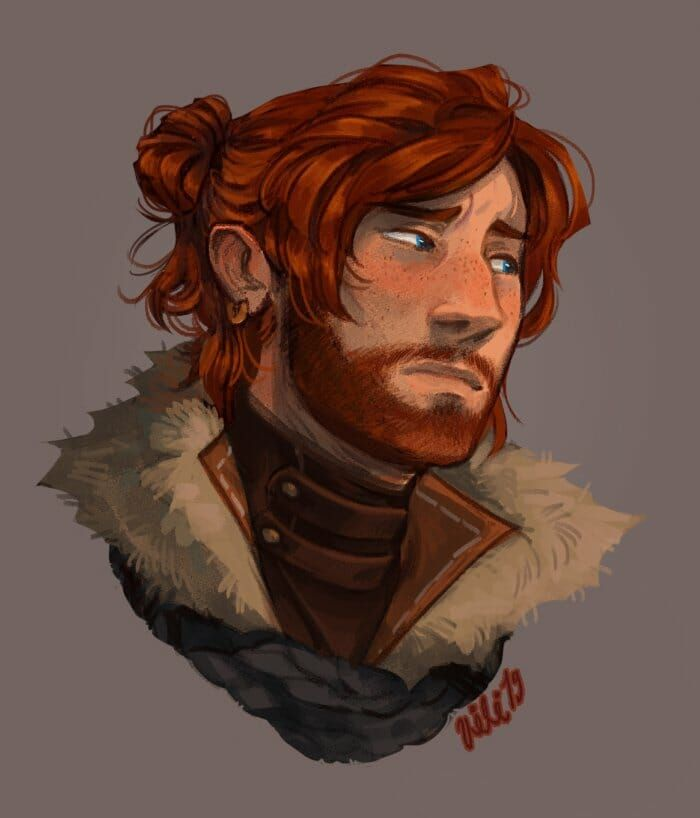

Entry #1 — Monday Thoughts
Mondays feel heavier than they should. Not bad, just… slower. I watched the street this morning while waiting for my coffee to cool. Someone dropped their keys. Someone laughed. Life kept going.
A very normal guy with a very normal life (probably)
Caleb is just some guy. He drinks coffee he forgot about, stares out of windows, and thinks about things that don’t really matter but feel important anyway. He works a regular job, comes home tired, and writes stuff like this instead of doing laundry.
Mondays feel heavier than they should. Not bad, just… slower. I watched the street this morning while waiting for my coffee to cool. Someone dropped their keys. Someone laughed. Life kept going.
Took the late bus home today. The city looks different at night, like it’s pretending to be quieter than it actually is. I kind of like that lie.